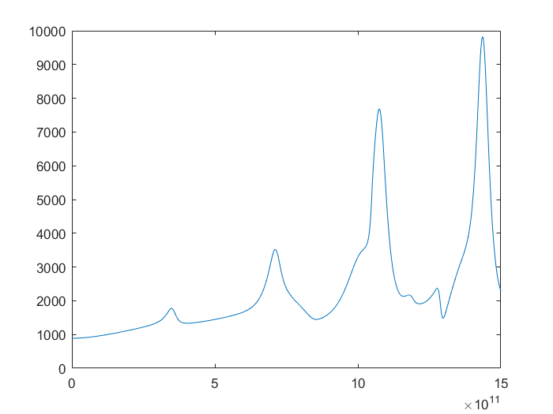
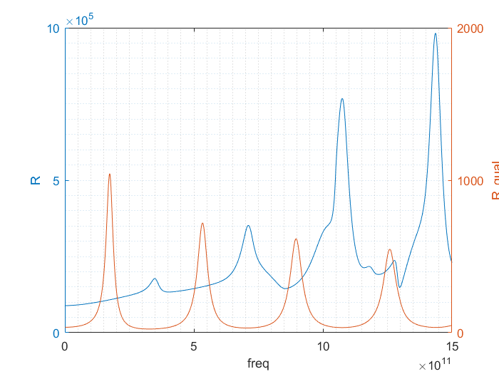
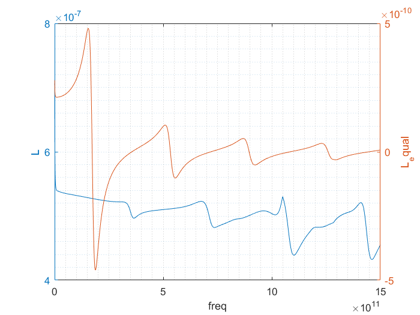
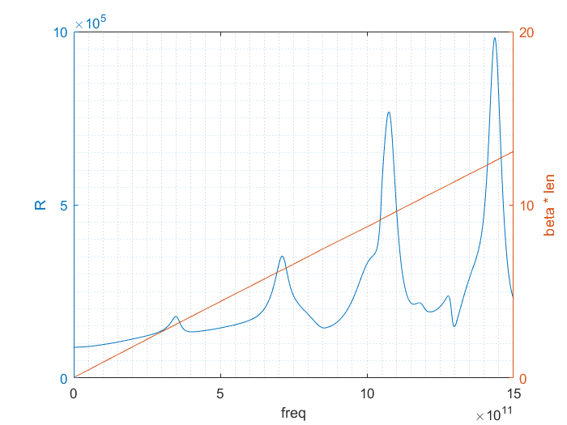
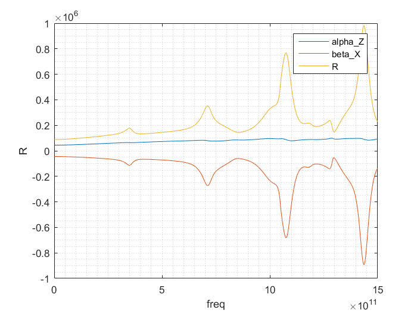
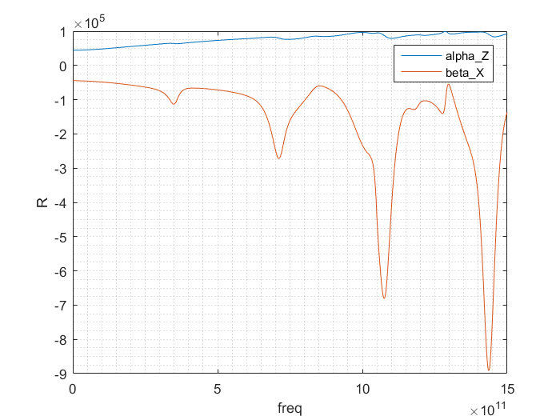
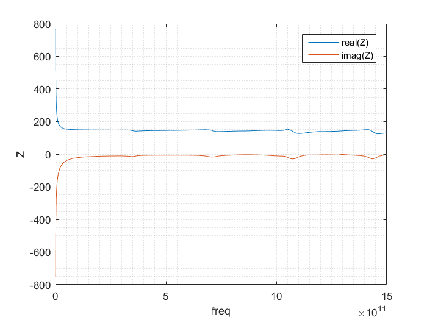
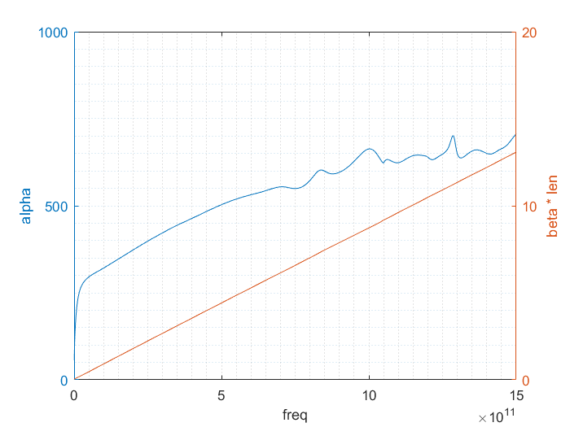

Contents
clc;clear;close all
dbstop if error;
addpath('./function')
l2w4s4_file = './S_parameters_sim/Transission.csv';
freq_unit = 'GHz';
zero_freq = 0;
freq_max =1500e9;
freq_min = 0.5e9;
len = 400;
num_pi = ceil(len/12.5);
len = len *1e-6;
[ s_params,freq] = hfss_csv_2_sparams(l2w4s4_file,zero_freq,freq_unit);
freq = freq*1000;
if max(freq)< freq_max || min(freq)>freq_min
error('max(freq)< freq_max || min(freq)>freq_min');
end
s_params = s_params(:,:,freq<=freq_max & freq>=freq_min );
freq = freq(freq<=freq_max & freq>=freq_min );
extract the RLGC
[R,L,G,C,gamma,Z0] = S_2_RLGC(s_params,freq,len);
figure
plot(freq,R*0.01);
L_omega = 2*pi.*freq.*L;
C_omega = 2*pi.*freq.*C;
Z_equal = R+1i.*L_omega+1./(G+1i.*C_omega);
deta_len =1e-8;
num_deta = len/deta_len;
R_deta = R*deta_len;
L_deta = L*deta_len;
G_deta = G*deta_len;
C_deta = C*deta_len;
L_deta_omega = 1i*2*pi.*freq.*L_deta;
C_deta_omega = 1i*2*pi.*freq.*C_deta;
ABCD= zeros(2,2,length(freq));
for k =1:length(freq)
ABCD(:,:,k) = ([1,R_deta(k)+L_deta_omega(k);0,1]*[1,0;C_deta_omega(k)+G_deta(k),1])^num_deta;
end
Y_param = abcd2y(ABCD);
Y11 = reshape(Y_param(1,1,:),length(freq),[]);
R_equal =real(1./Y11);
L_equal =imag(1./Y11)./(2*pi*freq);
figure
[ax,p1,p2]=plotyy(freq,R,freq,R_equal);
xlabel(ax(1),'freq')
ylabel(ax(1),'R')
ylabel(ax(2),'R_equal')
grid(ax(1),'minor')
hold off
figure
[ax,p1,p2]=plotyy(freq,L,freq,L_equal);
xlabel(ax(1),'freq')
ylabel(ax(1),'L')
ylabel(ax(2),'L_equal')
grid(ax(1),'minor')
hold off
alpha = real(gamma);
beta = imag(gamma);
beta_len = beta*len;
alpha_Z = alpha.*real(Z0);
beta_X = beta.*imag(Z0);
figure
[ax,p1,p2]=plotyy(freq,R,freq,beta_len);
xlabel(ax(1),'freq')
ylabel(ax(1),'R')
ylabel(ax(2),'beta * len')
grid(ax(1),'minor')
hold off
figure
plot(freq,alpha_Z,freq,beta_X,freq,alpha_Z-beta_X);
xlabel('freq')
ylabel('R')
legend('alpha\_Z','beta\_X','R')
grid minor
figure
plot(freq,alpha_Z,freq,beta_X);
xlabel('freq')
ylabel('R')
legend('alpha\_Z','beta\_X')
grid minor
figure
plot(freq,real(Z0),freq,imag(Z0));
xlabel('freq')
ylabel('Z')
legend('real(Z)','imag(Z)')
grid minor
figure
[ax,p1,p2]=plotyy(freq,alpha,freq,beta_len);
xlabel(ax(1),'freq')
ylabel(ax(1),'alpha')
ylabel(ax(2),'beta * len')
grid(ax(1),'minor')
hold off
       